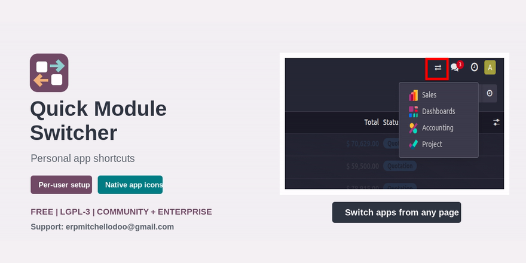
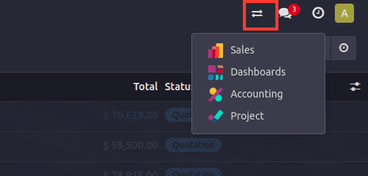
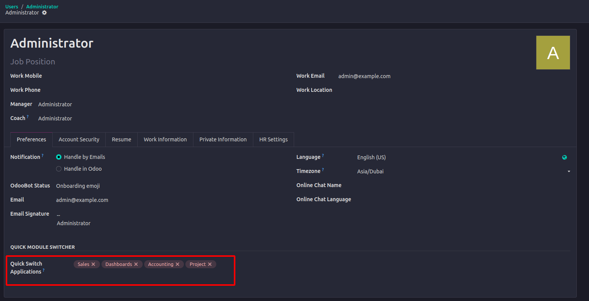
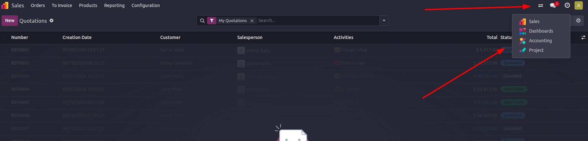

⇄
Switch from the systray
Open the compact switcher from any backend page and jump directly to another application.

Give every backend user a personal set of application shortcuts in the Odoo systray. Move between Sales, Purchase, Inventory, Accounting, or any accessible application without returning to the application dashboard.

Open the compact switcher from any backend page and jump directly to another application.
Each user selects their own shortcuts from Preferences. Administrators can also configure user records.
Only installed applications visible to the current user are returned and displayed.

